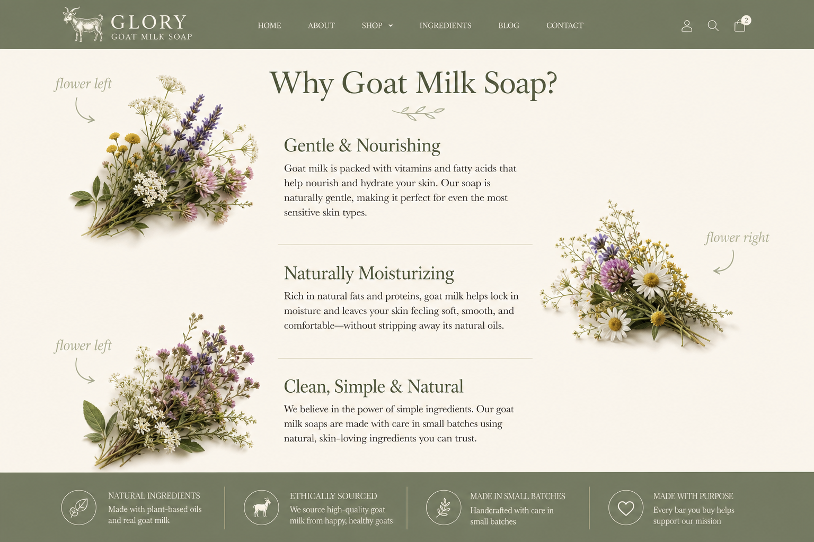

Pick the layout you want. Flowers sit beside the words (left or right), never stacked in the middle breaking the paragraph flow.

Current mistake: Images placed in the center between paragraphs. You said this looks terrible — agreed for your vision.
Because what you wash your skin with matters.
Many commercial soaps can leave your skin feeling tight, dry, or stripped. Goat milk soap is different. It produces a rich, creamy lather...
Flower stuck in middle ↓
Goat milk naturally contains fats, proteins, vitamins, and minerals that make it a wonderful addition to handmade soap...
Another flower in middle ↓
Goat milk also contains naturally occurring lactic acid...
Option A — Editorial float: Small flower clusters float left on one paragraph, right on the next. Text wraps naturally beside them. Classic magazine layout.
[🌸] Paragraph text wraps around
the flower on the left side
and keeps reading here...
Paragraph on the next block
wraps on the left while [🌸]
flower sits on the right →
Because what you wash your skin with matters.
Flower left ←
Many commercial soaps can leave your skin feeling tight, dry, or stripped. Goat milk soap is different. It produces a rich, creamy lather that gently cleanses while helping your skin feel soft, smooth, and comfortable after every wash.
Flower right →
Goat milk naturally contains fats, proteins, vitamins, and minerals that make it a wonderful addition to handmade soap. Its natural fats contribute to the soap's creamy texture and conditioning feel.
Flower left ←
Goat milk also contains naturally occurring lactic acid, a type of alpha hydroxy acid. Lactic acid is known for gently loosening dull, dead skin cells from the skin's surface.
Option B — Cascade in margins: Text stays in a clean center column. Flowers hang off the left or right edge, staggered as you scroll — like they're growing beside the page.
[🌸] ┌─────────────────┐
│ Paragraph text │
└─────────────────┘
┌─────────────────┐ [🌸]
│ Next paragraph │
└─────────────────┘
[🌸] ┌─────────────────┐
│ Third paragraph │
└─────────────────┘
Because what you wash your skin with matters.
Option C — Zigzag: Each paragraph pairs with a flower in its own row — flower left, then flower right, alternating. Very clear side placement.
[🌸] | Paragraph text
| in right column
| Paragraph text | [🌸]
| in left column |
[🌸] | Paragraph text
| in right column
Because what you wash your skin with matters.